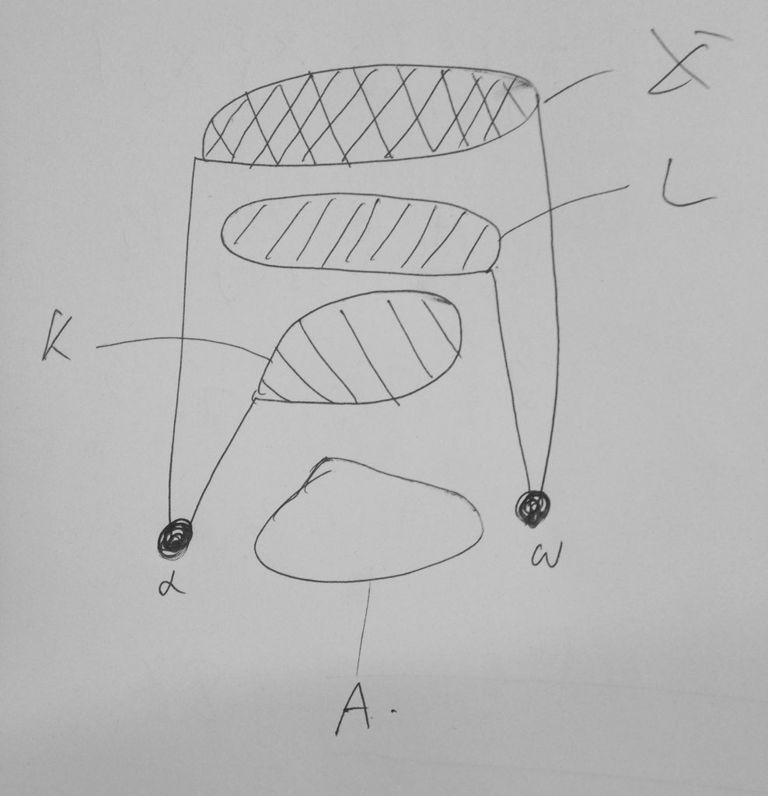

コンパクト集合の共通部分
HTML変換日：2026年7月26日
この文書では２つのコンパクト部分集合の共通部分がコンパクトでないようなものが存在する位相空間を構成する。案外簡単にできるので、この文書を読む前に自分で頑張って構成しようと試みることを推奨する。
以下そのような位相空間を構成する。
をノンコンパクトな位相空間とする。はこの位相空間の開集合系である。このときに属さない異なる二元を与え
と置く。さての部分集合族を
とする。 このときは開集合系の公理を充たすことは簡単にわかる。更にこのの部分空間としてのはである。さてはこの空間のコンパクト集合である。なぜならについて言うとを元に持つ開集合はのみだからである。についても同様。そして であり、はノンコンパクトであるから、２つのコンパクト集合の共通部分がコンパクトでない空間が得られた。
